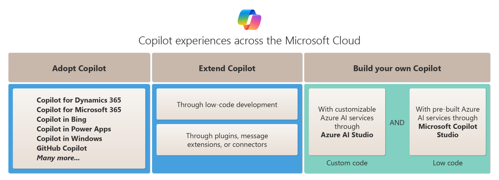
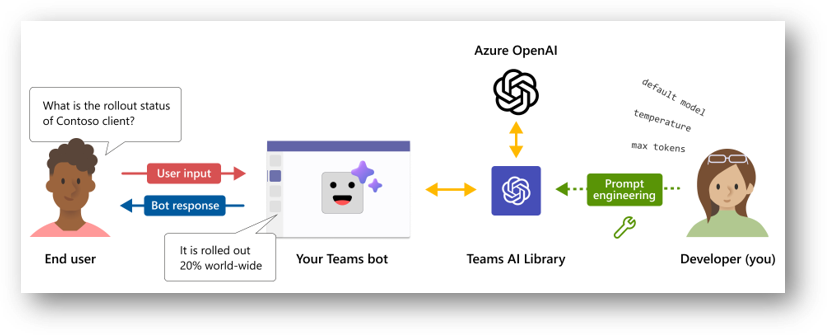
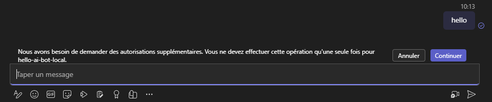
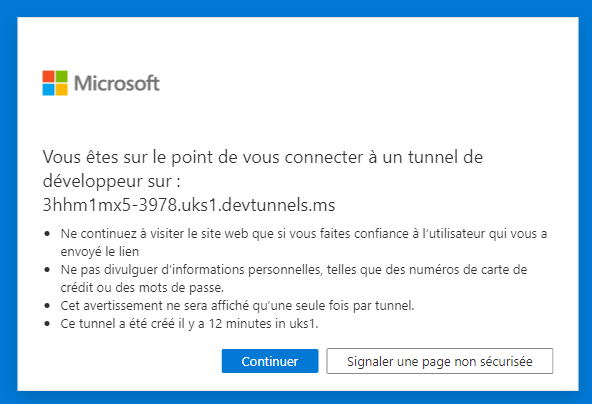
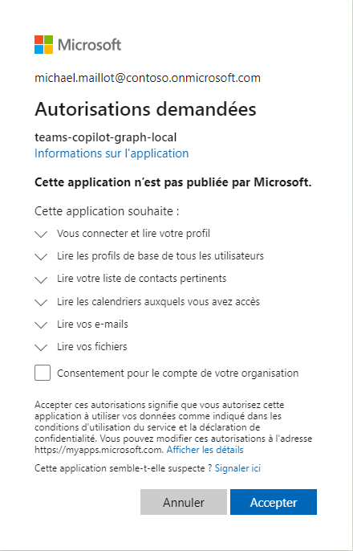
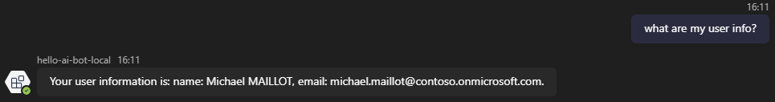
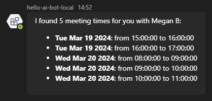
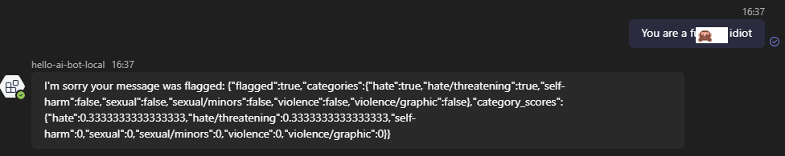
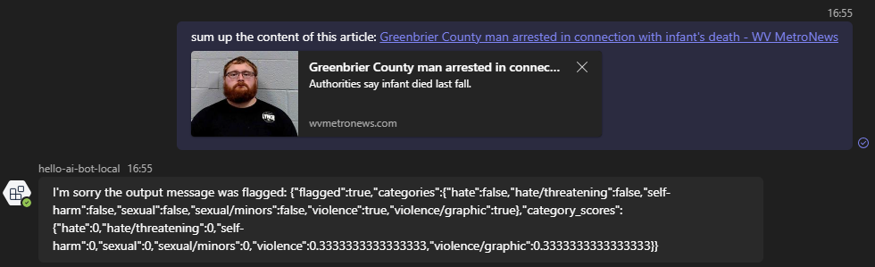
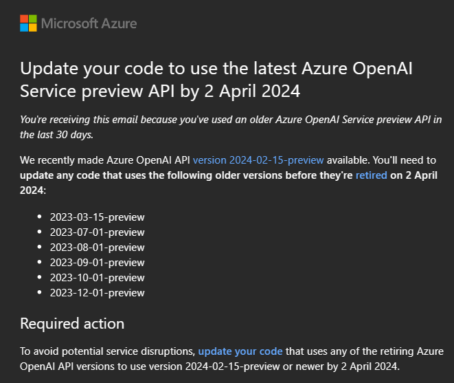

Getting started with Teams AI library
With the rise of LLMs such as GPT and Llama, Microsoft not only provides ready-to-use chatbot such as Copilots but also extensibility features.

Among them, one got my attention from the first announcement as a preview: Teams AI library. First announced during Build 2023 as a public preview, the library got significant changes until its official release (GA) on December 12, 2023 (even if announced first during Ignite 2023 but still in preview though). However, you can start developing with it using Teams Toolkit which has a dedicated template!
In this article, I'll explain key features of this library, how to get started with a ready-to-use chatbot sample which will include Azure resources usage.
Warning
Disclaimer This article will focus on Teams AI library (TypeScript) with a chatbot example, not message extension. It will also leverage Azure OpenAI & Azure AI Content Content Safety. Consequently, it won't use the Azure OpenAI's new assistant features.
Library's key concepts

The library is based on Bot Framework SDK which has already event handlers & methods to interact with Teams chat context (app installation, message reactions, adaptive cards...) but has also AI dedicated features which relies on LLM to complete end user's intents. It also contains features related to moderation, prompt functions injection and intents-to-actions mapping.
Along with these features, Teams AI library includes Retrieval Augmented Generation (RAG) which facilitates existing custom data sources search when a user requests particular info. For now this is only available when adding data sources such as Vector one.
Prompt manager
The prompt manager will gather information related to prompt configuration, prompt itself and optionally, actions that can be called by the prompt when using augmentations. A Teams AI prompt has to be structured like this:
- prompts folder
- prompt name (
chatfor example)config.json: prompt configuration (input tokens, temperature, penalties,...)skprompt.txt: flat file that gives a context to the model and for which you can provide functions and context variablesactions.json(optional): a list of methods with a description and optionally input parameters that can be requested by the SDK to the user
Most of the prompt manager features are based on Semantic Kernel ones.
Storage
Storage feature is for keeping state information (temp values, input / output actions) but also user session / history, which can be useful for complex scenario where you want the model to remember previous messages exchanged with the user. The Storage features comes from Bot Framework SDK.
Planner
The Planner is the most essential configuration part of the app. This will perform key actions like validation and feedback loop to bring the expected answer to user's request. It contains:
- Model instance used (OpenAI or Azure OpenAI key, deployment to use, endpoint, request configuration,...)
- Prompt manager (history token, input tokens, which prompts to use,...)
- Tokenizer (if specific, otherwise a default one will be used)
- Number of repair attempts to perform during intent-to-action validation process
The Planner will orchestrate the LLM's response validation accordingly to the selected augmentation if such.
Augmentations
Augmentations are some kind of enhancements. They leverage the LLM to "reason" or plan user's intents, preventing wrong answers by checking if intent will match with a declared action and if necessary, will ask the AI system to adjust its response, before bringing an answer to the user.
Whether you choose to use monologue or sequence, both will rely on a plan. We'll see later in this article that the process is interesting and that the choice of the augmentation impacts your bot's behavior.
There are two augmentations available, depending on the scenario you imagine for your bot.
Sequence augmentation
Sequence augmentation works with a DO / SAY system, which will be turned into a plan that can be helpful in a multi-step process like for example, scheduling a meeting which will start by finding a common slot with a coworker from a start date, then initializing a meeting request.
When initializing the AI system, Teams AI is completing the initial prompt with the following info (it's trimmed and shrunk in the debug to avoid over-consumption of tokens):
[INITIAL PROMPT]
Use the actions above to create a plan in the following JSON format:
1 2 3 4 5 6 7 8 9 10 11 12 13 14 15 16 17 | |
Like this, it will be able to transform actions into a DO-SAY plan.
Below is an example of how Teams AI behaves when a user is requesting to get its info, as stated in the augmentation title, "sequentially" by first performing the action, then returning a response to the user:
1 2 3 4 5 6 7 8 9 10 11 12 13 14 | |
The cool thing about this one is that you can provide conversation values that will be available in the prompt, which then will be used by the AI system.
Warning
When using sequence augmentation, if you want the model to automatically return info, you have to update the prompt with conversation state properties. We'll see about that later on.
Monologue augmentation
With this augmentation, when interacting with the bot, there's a self-reasoning mechanism that will help the LLM to find out user's intent and try to match it to an action. If required info is missing, it will guess that it has to ask it to the user or rely on the prompt if necessary.
Like for the sequence augmentation, Teams AI will complete the initial prompt like this:
1 2 3 4 5 6 7 8 9 10 11 12 13 14 15 16 17 18 19 20 21 22 23 24 | |
As you can see, it's kind of different than the previous. You can see that there's a notion of thoughts which lead the AI system to have a self-reasoning process.
This is an example of how Teams AI translates user's request.
1 2 3 4 5 6 7 8 9 10 11 | |
We'll see in the sample's description that the mechanism is interesting to observe but also more limited than the sequence one according to me.
Use case
You want to provide a custom intelligent chatbot to your end users, that both leverage the power of the LLM and respects the company's privacy.
But moreover, you want to provide advanced capabilities based on company's ecosystem using Microsoft Graph with current user's context.
You want users to get the information they're looking for, with simple requests and if necessary, the chatbot will ask for missing information to complete the initial request.
Architecture
- Azure OpenAI service (
Microsoft.CognitiveServices/accounts)- LLM Deployment
- Azure AI Content Safety (for moderation)
- Web App (to host the deployed bot)
- 2 Entra ID Apps
- 1 for the bot
- 1 for managing Graph API permissions through OBO flow
Solution's description
If you want to download the sample solution, here it is (read the README first 😉): Teams AI Chat Bot Graph sample
Based on a sample project generated by Teams Toolkit, the solution contains everything to run "locally" (there're still Entra IDs generated on the fly + a dev tunnel visible from BotFramework site + Azure AI resources).
It also provides everything to deploy the bot on Azure. The only resources not provided by default are the Azure OpenAI service and the Azure AI Content Safety, which have to be provided in the env files (both git tracked and untracked / private ones, in the local and dev environments).
Even if this article is focused on local env, the featured sample is ready-to-use for dev one if you add and fill .env.dev.user file. More info regarding Teams Toolkit environment configuration can be found here.
This sample handles following features:
- Silent SSO with Graph API
- Azure OpenAI connection
- Azure AI moderation
When pressing F5, the local .env is triggered with the following actions in this order through Team Toolkit:
- Running the
teamsapp.local.ymlfile - Provisioning
teamsApp/create: Creating the Teams App for deployment (see Teams Developer Portal)botAadApp/create: Creating the Entra ID app that will handle the bot- Writing the generated info in the .env.local & .env.local.user files
botFramework/create: Registering the bot on the Bot Framework developer portal- Including the bot Entra ID, messaging endpoint, Teams channel
aadApp/create: Creating the Entra ID app that will handle the OBO flow with Graph API- Writing the generated info in the .env.local & .env.local.user files
aadApp/update: Updating the previous created Entra ID app with more info based on a template manifest- Including Graph API permissions, access_as_user API authorization endpoint,...
teamsApp/validateManifest: Validating Teams manifest file- Generating a
manifest.local.jsonfrommanifest.jsontemplate file
- Generating a
teamsApp/zipAppPackage: Packaging the Teams App with manifest and iconsteamsApp/validateAppPackage: Validating Teams App packageteamsApp/update: Adding or updating Teams App on the Teams Developer Portal
- Deploying
cli/runNpmCommand: Installing dependencies to run the solution locallyfile/createOrUpdateEnvironmentFile: Setting context environment values- These values will be used in the
config.tsfile during runtime
- These values will be used in the
Authentication
First, the authentication. By default, there's nothing configured except the default Entra ID app linked to the Azure Bot resource, in order to be available in Teams.
But thanks to Teams AI, you can specify dedicated authentication, including API scopes (here Microsoft Graph). See snippet below:
1 2 3 4 5 6 7 8 9 10 11 12 13 14 15 16 17 18 19 20 21 22 23 24 25 26 | |
In this case, the solution will use the OBO flow in order to give user permissions to query Graph API on his behalf. The only required thing here is that he will have to approve requested permissions once, through a dedicated page (here auth-start.html which is located in the public folder of the project). It will be displayed like this during first user interaction:

Info
Message is: "We need to request additional permissions. You should only need to do this once for [Entra ID App name]". Of course, if this has been already allowed for the whole organization, this message won't be displayed.
Then user will be redirected to a dedicated page (the one mentioned above in the SignInLink param). When testing locally, this window will appear:

Finally, the user will see the common permission approval page:

If the user clicks on the "App Info" link, it will display the Entra ID app name and the redirect URI (here auth-end.html located in the public folder of the project), which is configured in the Entra ID app in the "Authentication" part, as a Web platform. This is included in the project sample in the bicep files.
AI system interaction
Once authenticated, we need to "init" the interaction with the AI system through Teams AI and most importantly, setting up the Microsoft Graph context.
This can be done in a event handler, after signing in called onSignInSuccess. The problem is, if we use this handler, it will "bypass" the LLM init which means that the user will have to send another message after authentication. The solution here is to setup the AI system in the event handler:
1 2 3 4 5 6 7 8 9 10 11 12 13 14 15 16 17 18 19 20 21 22 | |
Once the graph token is obtained and used to instantiate the Graph client, the event handler will init the LLM through the action greetings which will welcome the user for the first time.
Actions
Like mentioned earlier regarding the prompts folder, Teams AI gives the opportunity to declare functions as actions with a simple description and if necessary, parameters than can be required or not.
As discussed earlier, the use case here is to facilitate user interaction with his organization context through Microsoft Graph. Below the content of actions.json:
1 2 3 4 5 6 7 8 9 10 11 12 13 14 15 16 17 18 19 20 21 22 23 24 25 26 27 28 29 30 31 32 33 34 35 36 37 38 39 40 41 42 43 | |
We'll focus on the sequence augmentation first, then on the monologue one.
Sequence
We can find the greetings action mentioned before, but also other ones. Now let's go back to the code where the greetings action is declared:
1 2 3 4 5 6 7 8 9 10 11 | |
When referring to a declared action, the command app.ai.action will be used. That's where the "magic" works. The AI system, when initialized, will complete the developer's prompt with a "plan", containing the actions declared in the JSON file, that will help it to match user's potential request with commands hard-coded in the app.
Of course, we could just post a predefined message, but I found it more interesting to let the AI system generate the response for me (and after all, isn't one of the library's purposes?).
For this, we can count on the Planner context, for which we have two methods called beginTask & continueTask. Under the hood they will generate a new plan and will let us access the AI system's response based on both user's current request and the matched action.
For the greetings action, as it's the first one triggered manually after the authentication process, we have two possibilities following the beginTask method:
- The AI system was able to generate the plan, it will contain all the actions and the first one is the greetings one (because declared as such in the
actions.jsonfile) - The plan was not able to generate the plan yet, then it will return a basic sentence
Because we can't be sure that the plan will be generated first, the greetings action will handle both scenarios.
You would ask: Why don't you handle the response yourself?. Let's see what the AI system responds on the first interaction in the scenario where it was able to generate the plan:
1 2 3 4 5 6 7 8 9 10 11 12 13 14 15 16 17 18 19 20 21 22 23 24 25 26 27 28 29 30 31 32 33 34 35 36 37 38 39 40 41 42 43 44 45 46 47 48 49 50 51 52 53 54 55 | |
As you can see, in the generation, all DO commands have respective SAY ones, which contain predefined answers with a "slot" for the expected data.
So what if we could go further and let the AI system answering to the user's request if it's "aware" of the data?
Let's take another registered action, like getUserInfo.
Let's say that we want to give additional info about the user when requested and we want the AI system to know this info. Teams AI provides the ability to extend the conversation context object by adding new properties:
1 2 3 4 5 6 7 8 9 10 11 12 13 | |
Here, we're defining the UserInfo property with user's additional info. From my perspective, I see two advantages when using this:
- We can store in the app's storage memory that kind of info we can refer to anytime and in our case, when actions are requested, to avoid token consumption
- The prompt can be updated with those properties so that the AI system can also refer to it when generating answers
Regarding the prompt, below the info regarding user's properties:
1 2 3 | |
With Teams AI, we can inject additional data to the prompt dynamically!
If we focus on the action getUserInfo:
1 2 3 4 5 6 7 8 9 10 11 12 13 14 15 16 17 18 19 | |
As we're triggering it the first time, we have to query the Graph API to get expected info. Then we update both the conversation context object and consequently the prompt with obtained info. Finally, we're asking the AI system to start a new plan with updated data through the sendActivityFromPlanner:
1 2 3 4 5 6 7 8 9 10 11 12 13 14 15 16 17 18 19 20 21 22 23 24 25 | |
This method, called by most of the actions in our sample, will let the AI system generate a new plan that will eventually return the expected SAY command with updated data. If not, the method will let the AI system update its plan 2 more times and in the worst case, will return the last generated message even if not the expected one.
So when we're querying the bot to get our user info:

The AI system will behave like this (from the TERMINAL tab in VS Code during local execution):
1 2 3 4 5 6 7 8 9 10 11 12 13 14 15 16 17 18 19 20 21 22 23 24 25 26 27 28 29 30 31 32 33 34 35 | |
This has been done like this because I realized that the AI system was unstable and not always able to return the expected answer.
The cool thing is that we can easily detect this through the returned plan. But beware that this approach, even if nice because you don't have to worry about how to generate the answer, it will consume more tokens because of the feedback loop process involved. Of course, responses are limited and if you want to return fancy responses, it's up to you 😉.
The SAY command has also limitations when returning complex objects. In our use case, if we want to find common meeting slots with a colleague, we're referring to Graph's findMeetingTimes method, returning following interface:
1 2 3 4 5 6 7 8 9 10 11 12 13 14 15 16 17 18 19 20 21 22 | |
Even if the SAY command generated by the AI system plans to include meeting time slots:
1 2 3 4 5 6 7 8 9 10 11 12 13 14 15 16 17 18 19 20 | |
And even if the prompt contains the meeting info in its state:
1 2 3 | |
It won't be able to list the meeting slots with appropriate info based on its scope of understanding. If we have a look at the chat prompt in the terminal during debug, here's the output:
1 2 3 4 5 6 7 8 | |
Decoded, here's the JSON inside content:
1 2 3 4 5 6 7 8 9 10 11 12 13 14 15 16 17 18 19 | |
It looks like it can't use Dates objects to create a response. But maybe I'm missing something?
Monologue
The monologue augmentation is also nice but more limited compared to what we saw with sequence one. Like explained earlier, during user's interaction with the AI system, it will have a chain-to-reason flow where the AI system will try to understand user's intent with self-reasoning.
Even if more limited because there's no DO-SAY plan, it's really interesting to see the "thinking" process made by the AI system.
Below the example when user requests meeting slots with a colleague, which supposes to trigger the findMeetingTimes action that requires at least the colleague parameter.
User request:
Find meeting slots with a colleague
AI system reasoning:
1 2 3 4 5 6 7 8 9 10 11 12 13 | |
Once requested colleague provided (here "Megan B"), here's the chat response:
1 2 3 4 5 6 7 8 9 10 11 12 13 14 15 16 | |
And here's the provided answer generated through code:

Remember that in the prompt, we provided additional info as default values to help the AI system, such as duration, current & start time,...
What I find very nice is how it processes internally to get the appropriate answer from user's request.
Moderation
Of course by default, the Azure AI built-in content filtering system included in the Azure OpenAI deployment will work and will trigger the following message:
The bot encountered unhandled error: The response was filtered due to the prompt triggering Azure OpenAI's content management policy. Please modify your prompt and retry. To learn more about our content filtering policies please read our documentation: https://go.microsoft.com/fwlink/?linkid=2198766
But what we want here is to handle the moderation through the app, in order to trigger specific action or send a custom message to the user.
Another cool built-in features in Teams AI is content filtering system. We can reference Azure AI Content Safety resources to better handle both input and output. Detailed documentation about content filtering can be found here.
In the app initialization, you can define an AzureContentSafetyModerator object:
1 2 3 4 5 6 7 8 9 10 11 12 13 14 15 16 17 18 19 20 21 22 23 24 | |
Warning
The azContentSafetyKey and azContentSafetyEndpoint config properties are not generated by Teams Toolkit during the compilation process: they have to be filled manually in the user .env.local file (as secrets), through their respectful properties SECRET_AZURE_CONTENT_SAFETY_KEY and SECRET_AZURE_CONTENT_SAFETY_ENDPOINT.
There are categories for which we can set a sensitivity level. We can also indicate if we want to filter input, output or both of them.
Once declared, the moderator constant can be included in the app declaration (in the bot-sequence.ts or bot-monologue.ts files):
1 2 3 4 5 6 7 8 9 10 11 12 13 14 15 | |
Of course, we want to "catch" the flagged input or output. For this, we'll use dedicated actions described here:
1 2 3 4 5 6 7 8 9 10 11 12 13 14 15 16 17 18 | |
Now let's give a try! For the input side, we'll simply enter something a bit aggressive to trigger the moderation:

The response of the Azure AI Content Safety is the following:
1 2 3 4 5 6 7 8 9 10 11 12 13 14 15 16 17 18 19 20 21 | |
As we can see, the categories hate and date/threatening were triggered by the message and there's a score (from 0 to 1) that gives a hint how important the flag was detected.
But what about output then? As we know, when using Azure OpenAI services, there's the principle of Responsible AI which protects LLMs from being aggressive or harmful towards humans. So for example, if we ask the model to insult us, it won't. So how can we try the output flag moderation?
Let's ask it to summarize the content of an online news article:
Warning
The output flag tab contains example of harmful content that may be disturbing to some readers.

The response of the Azure AI Content Safety is the following:
1 2 3 4 5 6 7 8 9 10 11 12 13 14 15 16 17 18 19 20 21 | |
Now in the output context, it's the categories violence and violence/graphic that were triggered when asked the model to summarize article's content and again, there's a score (from 0 to 1) that gives a hint how important the flag was detected.
Watchout
Below a few things to point out as a memo.
Documentation
As the documentation provided on Microsoft Learn is lightweight at the time I wrote this article, there are more info directly in the source code, like here or here for example. So feel free to deep dive into the code to learn more.
Await
Always use await when sending activities to the user. Otherwise, you'll face errors like this:
TypeError: Cannot perform 'set' on a proxy that has been revoked
AI.StopCommandName
When performing an action, think twice before using the AI.StopCommandName in the return statement. Use it when you don't want the AI system to handle response for you and if you want to actually stop the current plan initiated.
Otherwise, you can let it continue the process, which could be useful if for example you're starting to create a list of things, then adding items in it sequentially. Or if the AI system can handle the response for you because it already knows the answer (see actions in the bot-sequence.ts file for such examples).
Action misspelling and user's intent misunderstanding
If you misspelled an action in the code or forget to implement it, nothing will happen on the surface but the Terminal window in VS Code will mention this:
An AI action named "getUserColleagues" was predicted but no handler was registered.
In this use case, I've focused both prompt and functions on the user. I tried to do the same with the colleague but I met some issues from the LLM to understand my queries.
Azure OpenAI API preview version
When using a model deployment, you're referring to a version ('2023-07-01-preview', '2023-12-01-preview', '2024-02-01'...). Each new version contains new parameters, new features.
As Microsoft publish new preview versions each month, they also retire "old" ones. So be careful if you're using preview versions, you could receive an email from Microsoft, warning you that old ones will be retired:

More info regarding API version deprecation here
Personal feedback
During my tests, at first I found that the monologue augmentation was the best for my use case. But then I realized that the sequence one could benefit from the completion feature which can provide answers if we give it context variables needed to perform actions. Useful if you require info that doesn't need to be queried.
As I'm not a prompt expert neither an LLM or a Teams AI one, I've probably missed some key points on how to leverage the library as its best. But I'm really surprised how far we can go with this library and I'm looking forward to other's feedback!
That's it
We've seen on the surface that Teams AI is a really powerful library but needs extra documentation beyond available samples. Below some personal expectations regarding new features:
- Support of stream mode (even if not part of Teams Client natively): https://github.com/microsoft/teams-ai/issues/185
- Native support of text-to-image & image-to-text models, such as Dall-E
- OpenAI spec support as additional augmentation
I hope that you've found in this article some additional info that will help you in your Teams AI journey. Feel free to reach out on Twitter or directly in the sample repo if there's something you'd like to fix / improve / add.
Happy coding!